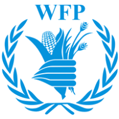

رؤيتنا
أولوية القطاع المنكوب
أن تبقى إغاثة غزة حاضرة وموثّقة
مأوى آمن، وجبة يومية، ودواء يصل للخيمة قبل أن تضيع الكرامة في الزحام. نثبت الحضور في الشمال كما في رفح، والصورة قبل الشعار.
التعريف والمسيرة في غزة
من قلب القطاع، نسجّل بالصوت والصورة وصول الغذاء والدواء والمأوى إلى العائلات النازحة. هنا تُحفظ كرامة أهل غزة وتُروى قصص صمودهم يوماً بيوم.
auto_storiesقصتنا
تأسست جمعية الشمال للتنمية والتطوير المجتمعي ككيان إنساني غير ربحي للاستجابة العاجلة في قطاع غزة: الغذاء والدواء والمأوى والتعليم، من النزوح في الشمال حتى رفح.
فرقنا والمتطوعون يوثّقون وصول السلال والخيام والدواء إلى مخيمات النزوح في غزة على مدار الساعة، ونعمل بالتعاون مع هيئات أممية وهلال أحمر وصناديق زكاة لإيصال الإغاثة إلى غزة بشفافية كاملة.
timelineمحطات المسيرة
أبرز المحطات المنشورة في تقاريرنا الميدانية داخل القطاع.
سنة التأسيس
محتوى تجريبيتأسست جمعية الشمال للتنمية والتطوير المجتمعي ككيان إنساني غير ربحي للاستجابة العاجلة في قطاع غزة: الغذاء والدواء والمأوى والتعليم.
سبتمبر 2024
احتفاء بعودة 210 طفلاً نازحاً إلى حلقات تعلّم مؤقتة في القراءة والحساب والدعم النفسي.
أكتوبر 2024
عيادات خيام للجروح والأطفال والتوليد، وصرف أدوية مزمنة، وتحويلات عاجلة داخل وسط القطاع.
28 نوفمبر 2024
منظومة تتيح للمتبرع متابعة وصول كل سلة غذائية إلى العائلة النازحة وتوثيقها بالصورة من الخيمة.
نوفمبر - ديسمبر 2024
إيصال حزم الدفء لحماية أكثر من 45 ألف نازح من برد الخيام في جنوب القطاع.
ديسمبر 2024
إطلاق برنامج التمكين المجتمعي لـ 500 مستفيد من شمال غزة وجباليا، وإقفال دورة التوزيع بنسبة توثيق 98.4% مع تشغيل ثلاثة مخابز إضافية في خان يونس ورفح.
visibilityالرؤية والرسالة والقيم
أولوية القطاع المنكوب
مأوى آمن، وجبة يومية، ودواء يصل للخيمة قبل أن تضيع الكرامة في الزحام. نثبت الحضور في الشمال كما في رفح، والصورة قبل الشعار.
ميثاق إغاثة غزة
تدخّلات عاجلة داخل القطاع تجمع بين الإطعام والرعاية والتعليم المؤقت للأطفال النازحين في المدارس ومراكز الإيواء، من جباليا حتى جنوب القطاع.
ما لا نساوم عليه
الكرامة أولاً في كل توزيع، والشفافية في توثيق كل سلة بالصورة، والأثر العاجل بالغذاء والدواء، والعدالة من جباليا حتى رفح.
الكرامة أولاً في كل توزيع؛ تصل المساعدة إلى الخيمة دون أن تضيع الكرامة في الزحام.
توثيق كل سلة بالصورة، وتقارير دورية متاحة للمتبرعين والشركاء.
الغذاء والدواء والمأوى أولاً، بتدخّلات ميدانية سريعة داخل القطاع.
حضور متوازن في المحافظات الخمس، من جباليا حتى رفح.
routeكيف نعمل
منظومة تربط فرق التوزيع في محافظات القطاع الخمس بغرفة التوثيق.
فرقنا في محافظات القطاع الخمس ترصد احتياج العائلات النازحة في مراكز الإيواء والمخيمات.
قوافل الطحين والخيام وصهاريج المياه تتحرك داخل القطاع كل يوم.
تسليم مباشر للأسر في الخيام ومراكز الإيواء، والكرامة أولاً في كل توزيع.
متابعة مسار كل سلة وخيمة بالدقيقة والصورة عبر غرفة عمليات غزة.
نشر تقارير الإغاثة الدورية؛ آخر دورة توزيع أُقفلت بنسبة توثيق 98.4%.
monitoringالأرقام
مؤشرات منشورة من برامجنا داخل القطاع.
180K+
مستفيد في غزة
5
محافظات القطاع
+2,500
مقطع موثّق من غزة
98.4%
نسبة الشفافية والتدقيق
12,000 نازح يومياً — مخابز الطوارئ
500 مستفيد من التمكين
14,000 نسمة — مياه الشرب
1,200 خيمة في رفح
groupsالفريق ومجلس الإدارة
مجلس إدارة يضع السياسات والرقابة، وفريق تنفيذي يدير البرامج والتوثيق. محتوى تجريبي
مجلس الإدارة
رئيس مجلس الإدارة
نبذة مختصرة عن الخبرة والمسؤوليات تُضاف هنا.
نائب رئيس المجلس
نبذة مختصرة عن الخبرة والمسؤوليات تُضاف هنا.
أمين الصندوق
نبذة مختصرة عن الخبرة والمسؤوليات تُضاف هنا.
الفريق التنفيذي
المدير التنفيذي
نبذة مختصرة عن الخبرة والمسؤوليات تُضاف هنا.
مدير البرامج الميدانية
نبذة مختصرة عن الخبرة والمسؤوليات تُضاف هنا.
مسؤول التوثيق والإعلام
نبذة مختصرة عن الخبرة والمسؤوليات تُضاف هنا.
handshakeشركاء إغاثة غزة
نعتز بالتعاون مع هيئات أممية وهلال أحمر وصناديق زكاة لإيصال الإغاثة إلى غزة بشفافية كاملة.
child_careشريك دولي
نتعاون مع اليونيسف لتوفير الحماية والتعليم الطارئ لأطفال غزة، ودعم برامج التغذية والمياه النظيفة.
publicهيئة أممية
بالتنسيق مع الأمم المتحدة نوثّق الاحتياجات الإنسانية وننسّق قوافل الإغاثة الداخلة إلى القطاع.

nutritionأمن غذائي
نشارك برنامج الغذاء العالمي في توزيع السلال الغذائية والوجبات الجاهزة على العائلات النازحة.
medical_servicesرعاية صحية
ندعم مع منظمة الصحة العالمية تشغيل النقاط الطبية الميدانية وتأمين الأدوية الأساسية.
emergencyإغاثة عاجلة
نتكامل مع فرق الهلال الأحمر في الإخلاء الطبي وتوزيع الإغاثة العاجلة داخل غزة.
shieldحماية إنسانية
نتعاون مع اللجنة الدولية لتسهيل دخول المساعدات وحماية المدنيين وفق القانون الدولي الإنساني.
حملة السلال والخيام والمياه
قوافل الطحين والخيام وصهاريج المياه تتحرك داخل القطاع كل يوم. مساهمتك تتحوّل إلى وجبة ساخنة، خيمة عازلة، وصهريج شرب لعائلات نزحت من بيوتها.